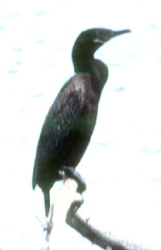

| These photographs accompany records that have been recently submitted to the committee. This record
has been ACCEPTED.  Neotropic Cormorant Phalacrocorax brasilianus 11 June 1998, South end of the Salton Sea, IMP 1998-079 © 1998 Michael A. Patten Back to CBRC Rare Bird Photos |